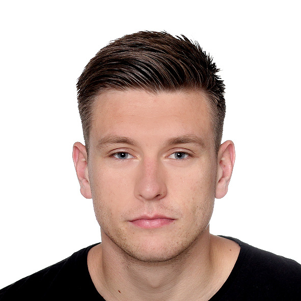

Karlo Strunje
Project engineer at Center of Technology Transfer d.o.o.
I am 25 years old and live in Zagreb,Croatia.
I graduated at the Faculty of mechanical engineering and naval architecture in Zagreb (mag.ing.mech.).
I am very ambitious, communicative and flexible person. Like to work
in a team, where I can give good support and some individual ideas, solutions. I want to have new
challenges in life and upgrade my knowledge, experience . I search new career in my study field.
Working in my study field is not necessary. Open to learning and working many different types of
jobs and knowledge. I am open to working abroad, not only in my country.